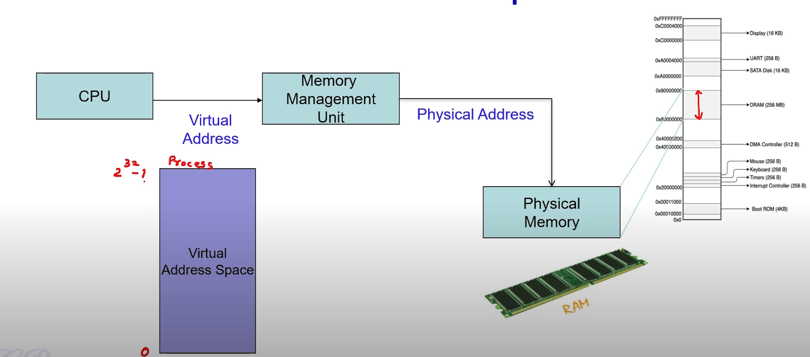
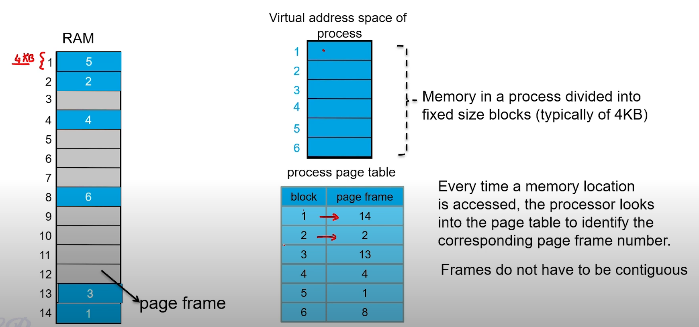
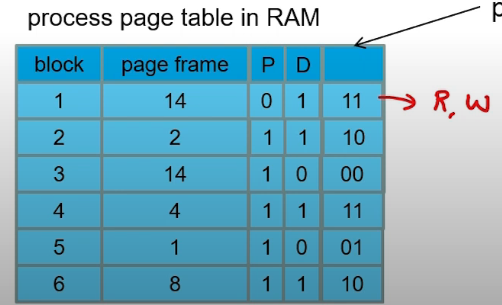
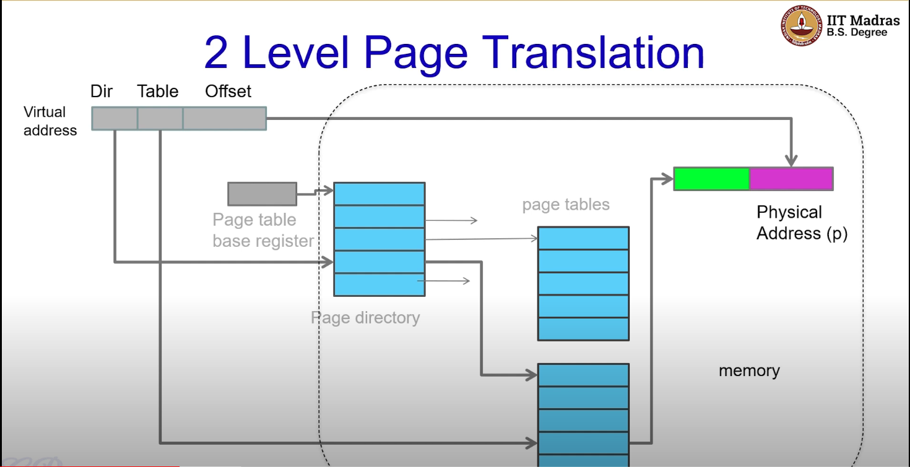
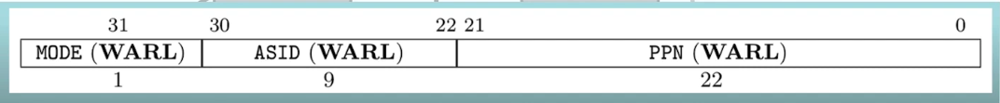
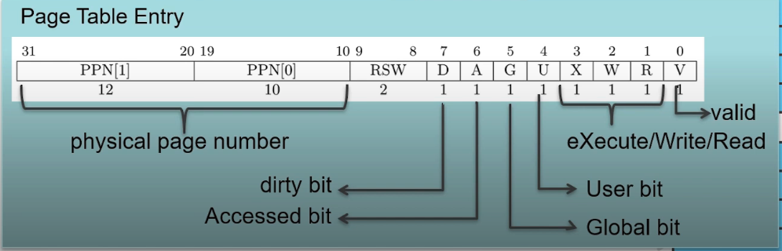
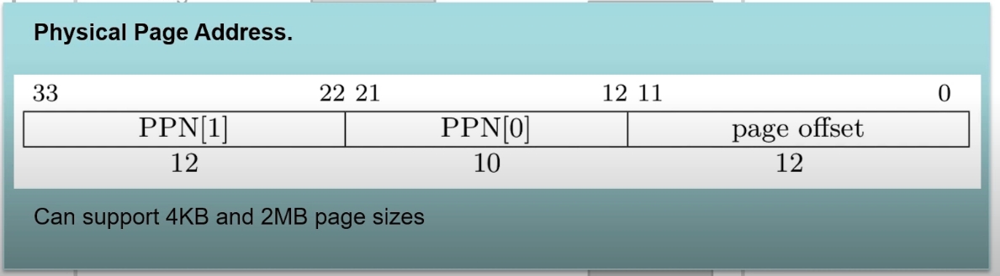

Linker descriptor is given part of the arguments during make which tells the program where to place the entry.S. kernel.ld ensures that entry.S is at location 0x80000000 which starts the xv6 OS.
entry.S is written in assembly as no C code and can run without a stack. The only job of the entry.S is create a stack for each CPU core and then move into the C program (start.c).
The stack pointer for all the cores point to the top of their stack i.e. stack pointer for core 0 points to stack0+4kb because in C, the stack grows downwards.
start.c is entered in machine mode from entry.S . start.c moves the processor from machine mode to supervisor mode and calls the main.C
main.c is the first function that is executed by xv6 in the supervisor mode. In this function, the cpu cores are distinguished and only core0 executes certain functions whereas cores 1,2 execute something else.
some intializations should only be done once whereas others should be done by all/others.
Once these cores are initialized, the scheduler is invoked, and the scheduler would start to choose the user programs to execute and allocate them a CPU and shift the programs to user mode and allocate them processes.
§2.3: Memory Management - Virtual Memory
Consider a simple C function that prints “Hello World”. It is first compiled into an executable and upon executing the executable a process is created. The process contains the instructions that the code created (text), libraries (text), data, heap (dynamic allocation - malloc), and stack (local variables).
There are addresses associated with each of these blocks of the process. The process is contained inside the DRAM.
Process’ memory requirements may be much larger than the available DRAM. Furthermore, memory maps are unique for a system and hence a program compiled for one computer many not execute on another with a different memory map.
In multi-tasking environments, DRAM is shared across processes and each process has its own memory map. Process memory would need to be isolated from other processes and shared libraries could be repeated multiple times.
Virtual Address Space: Each Process owns an entire contiguous range of addresses. The addresses emitted out by the CPU is a virtual address. This virtual address is translated into a physical address by the Memory Management Unit / Paging Unit which lies on the DRAM.
An entire process memory is divided into fixed block sized of 4kb (Pages). DRAM is also divided into similar blocks known as page frames. In the example below, block 1 of the process is mapped to page frame 14. Note that frames do not have to be contiguous. 
So the CPU only sees the virtual addresses and the MMU uses the process page table to map it to physical addresses. This takes cares of the incompatibility issue as the virtual address space is the same across across all systems.
This idea can also be extended to multi-tasking systems. Each process will have its own process page table to map the virtual blocks to page frames in the RAM. Blocks from several processes can share pages in the RAM simultaneously.
As the CPU only sees the virtual addresses space for each process, the processes are isolated and sandboxed. However, blocks from several processes can share pages in RAM simultaneously to reduce memory usage. For example if processes 1 and 3 both invoke “printf”, then “printf” could be stored at page frame 8 in the RAM and the the process page table for both processes will map to page frame 8.
§2.4: Demand Paging
Do we really need to load all blocks into memory before the process starts executing (Alternatively, does the entire process page table need to be filled) ? No. Not all parts of the program are accessed simultaneously. Some may never be executed. Virtual memory takes advantage of this fact by using Demand Paging
Pages are loaded from disk to RAM only when needed. In the process page table, there is another column “P” corresponding to ‘present bit’ that is 1 if the block is in RAM.
If a page is accessed that is not present in RAM, the processor issues a ‘page default interrupt’, triggering the OS to load the page into RAM and mark the present bit to 1.
If there are no pages free for a new block to be loaded, the OS makes a decision to remove another block from RAM. This is based on the replacement policy implemented in the OS.
FIFO, Least Recently Used, Least Frequently Used
The replaced block may need to be written back to swap (swap out) if the block in the RAM was modified from what is in the swap space. If it is unmodified, then it doesn’t need to be written back to the swap space.
The page table contains another column “dirty bit” that is set to 1 if the block is modified in memory indicating that if this block is swapped out, it needs to be written to swap space.
The table also has a “protection bit” which determines if the page is executable, read only, and accessible by user processes. 
§2.5: Page Translation
The virtual address space in a 32 bit system is 4GB (2^32). If the size of each page frame is 4KB (2^12). The number of entries in a page table is 2^32/2^12 = 2^20. If the size of each page entry is 4 bytes, 4 MB of contiguous memory is required. Finding 4MB of contiguous may be difficult and therefore multi-level page translations are used
The MSB 10 bits are the directory bits, the middle 10 bits are the table bits and LSB 12 bits are the offset. The directory bits choose the page table from the page directory, the table bits choose the page from the page table, and produce its physical address of the page in memory. Then it is merged with the offset bits to point to the exact pointer to the location inside the page frame. Main advantage is the 210 tables can be stored separately and do not require a contiguous block of memory.
In a 32-bit RISC-V, the page table base register is called the satp register. It contains the following value
If the MODE bit is 1, then 32 bit virtual addressing is being used. If 0, then no translation.
The next 9 bits ASID is used to distinguish one process from another.
The PPN bits is a pointer to the address in memory that holds the first page directory.
If MODE is 1, then the virtual address is segmented as follows: VPN[1] corresponds to the directory bits, VPN[0] corresponds to the page table bits and the final 12 are the page offset.
An entry in the page directory table or the page table is of the following format:
Accessed bit is the same as present bit i.e. if a mapping exists then its set to 1
X/W/R are protection bits
Valid Bit (V): 0 - entry is invalid
User Bit (U): 1 if page belongs to user space/program
Global Bit (G): Shared page
Once a page table is selected first from the page directory table, and then a page is selected from the page table, the translated physical page address is a 34-bit address where the first 22 bits indicated the page frame and then 12 bits for offset within the page. This can support 4KB and 2MB page sizes. A 2MB page frame would require 21 bits as the offset
RISC V 64 Bit Addressing
The SATP Register
The RISC V 64 bit supports 39-bit and 48-bit virtual addressing.
The mode chooses 39-bit (1000) or 48-bit (1001) addressing. xv6 uses 39-bit addressing
39 Bit Addressing
39-bit addressing can support 4KB, 2MB, 1GB pages and 3 levels of page tables
The Sv39 virtual address contains three 9-bit indices. Since 29 = 512, each table contains exactly 512 entries.
The Sv39 virtual address contains VPN[x]. The VPN stands for "virtual page number", which is essentially an index into an array of 512, 8 byte entries. So, instead of having the virtual address directly translate into a physical address, the MMU goes through a series of tables. With the Sv39 system, we can have one to three levels. Each level contains a table of 512, 8 byte entries.
Table Entries
A table entry is written by the operating system to control how the MMU works. We can change how an address is translated or we can set certain bits to protect a page.
Physical Address
The physical address is actually 56-bits. Therefore, a 39-bit virtual address can translate into a 56-bit physical address. Obviously, this allows us to map the same virtual address to a different physical address--much like how we will map addresses when creating user processes. The physical address is formed by taking PPN[2:0] and placing them into the following format. Notice that the page offset is directly copied from the virtual address into the physical address.
§2.6: Page Table in xv6
The walk function takes in the following parameters:Page Table, Virtual Address, and Alloc (to determine if new page frame should be allocated).
Check if virtual address is is valid (i.e. < 239−1)
{kind=link}
{kind=link}
{kind=link}
{kind=link}
{kind=link}
{kind=link}
{kind=link}
{kind=link}
{kind=link}
{kind=link}
{kind=link}
{kind=link}